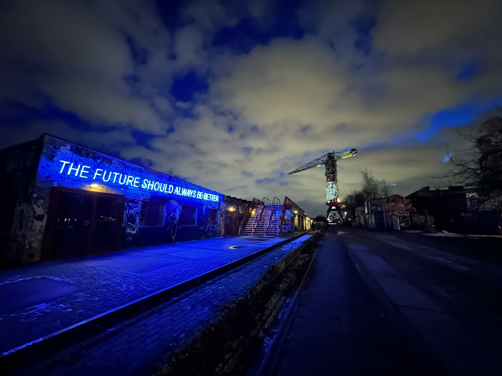

De NDSM-Werf:
Een Creatieve Speeltuin
ls je van een levendige sfeer en artistieke vibes houdt, dan zit je goed bij de IJ-hallen op de NDSM-werf in Amsterdam. Deze plek ademt creativiteit en heeft voor elk wat wils, of je nu een kunstliefhebber, een avonturier of gewoon op zoek bent naar een gezellige tijd.
Omgeven door Inspiratie
De NDSM-werf is meer dan alleen een plek, het is een gemeenschap van creatieve geesten die de industriële omgeving hebben omgetoverd tot een kunstzinnig wonderland. Wandel door de straten en laat je betoveren door de kleurrijke graffiti en intrigerende street art die elke hoek en muur siert.


Kunst die Leven Inblaast
Hier draait alles om kunst - van de galerijen tot de openbare ruimtes. Je zult versteld staan van de diversiteit aan creativiteit die deze plek te bieden heeft. Laat je inspireren door de kunstenaars die hier hun stempel hebben gedrukt en geniet van de levendige energie die hun werk uitstraalt.
Mogelijkheden
Maar er is meer dan alleen kunst op de NDSM-werf. Deze bruisende buurt biedt ook een scala aan activiteiten en evenementen om je dag mee te vullen. Van muziekfestivals en ambachtelijke markten tot gezellige cafés en alternatieve theaters - hier is altijd iets te beleven.
IJ-hallen: Schatzoekers Welkom!
En last but not least, de IJ-hallen! Deze markt is het kloppende hart van de werf, waar je kunt ronddwalen tussen kraampjes vol vintage schatten en unieke vondsten. Het is de perfecte plek om te snuffelen, te onderhandelen en natuurlijk te ontdekken wat voor verborgen pareltjes je kunt vinden.